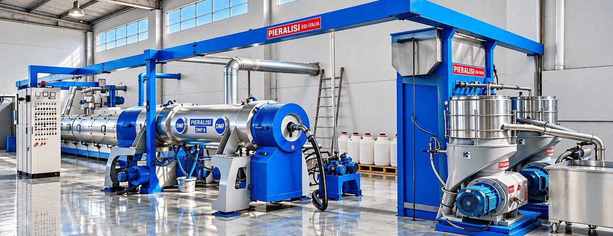
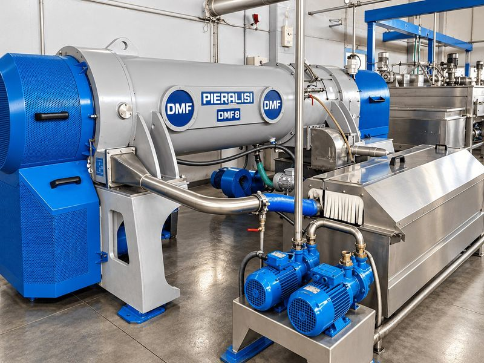
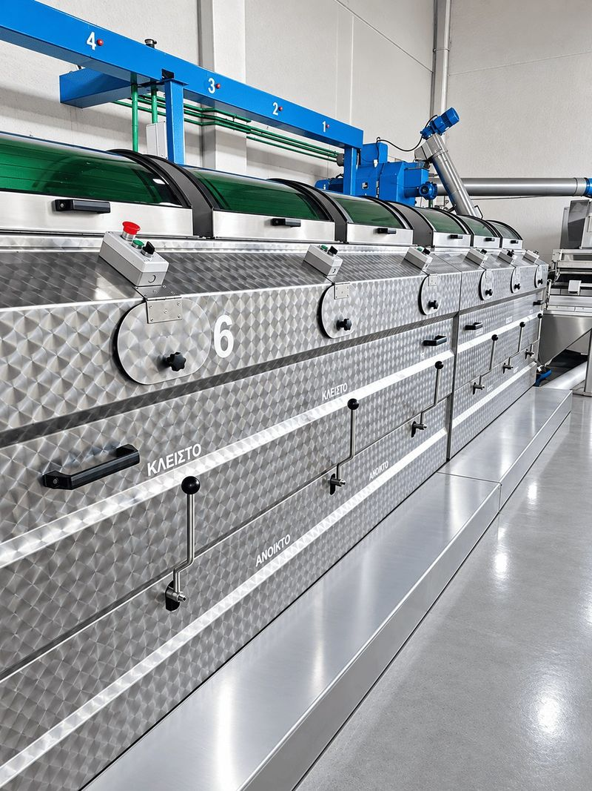
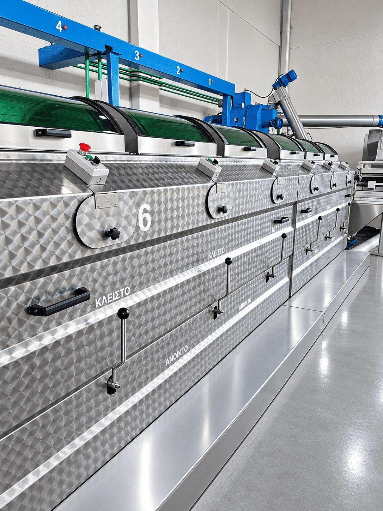
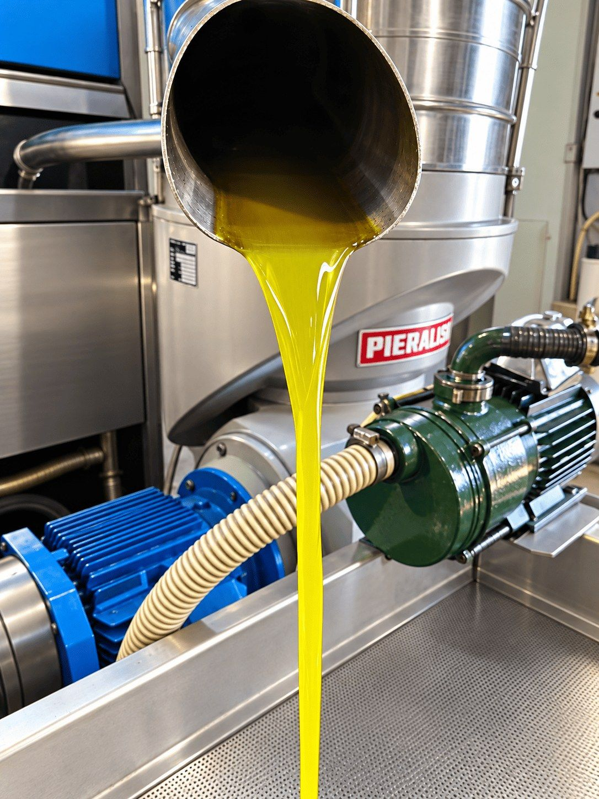
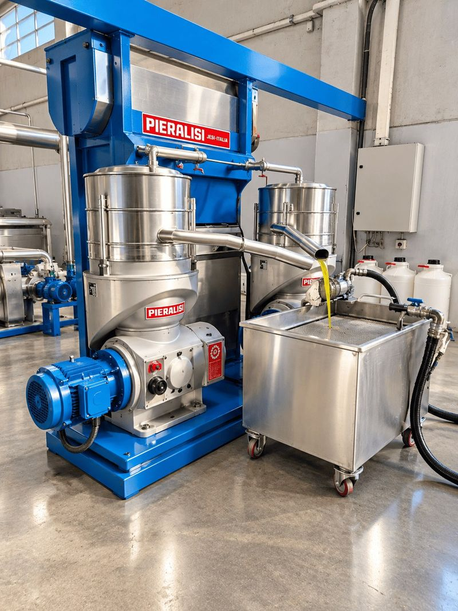
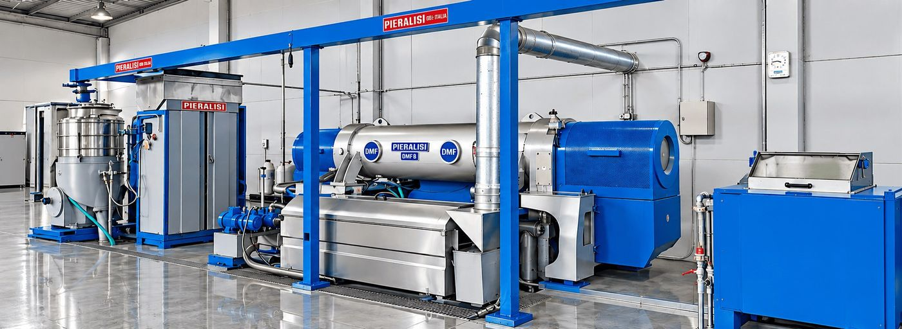
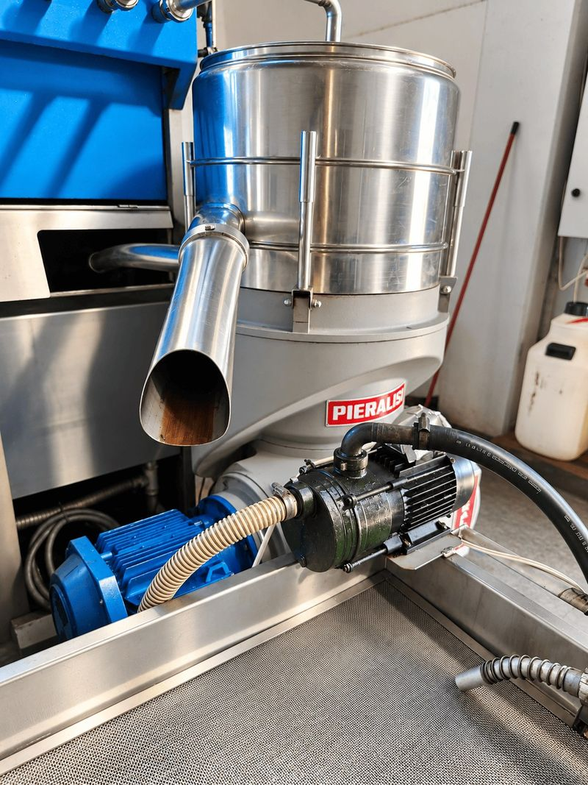
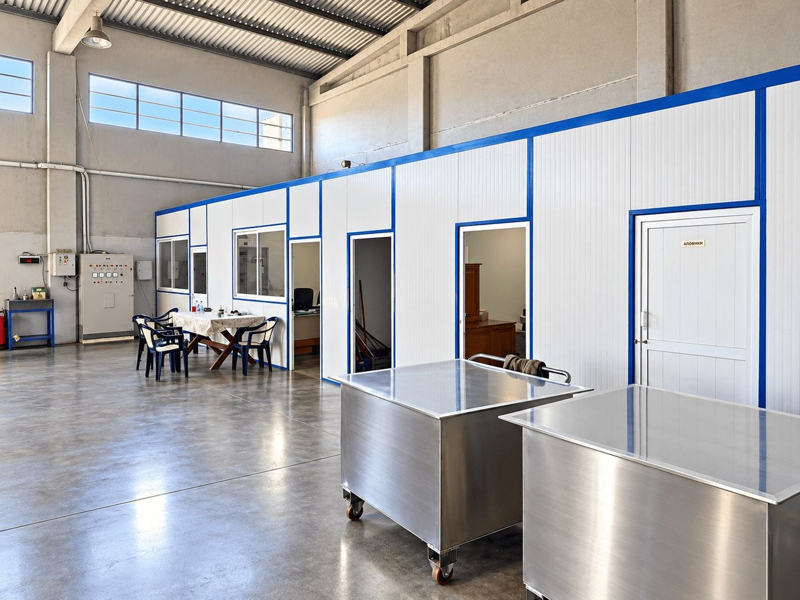

The mill today
A modern continuous line in stainless steel, set up for one thing: getting the oil out of the fruit without losing any of its goodness.
Equipment and the way we work
- Pieralisi processing line with a centrifugal decanter
- Stainless steel in the line and in the storage tanks
- Temperature control during malaxing, below 27°C
- Closed stainless-steel storage tanks
- Every batch processed separately, never mixed
- Lab analysis for every batch

Our line in pictures
Today’s processing line at the mill, from the arrival of the olives to the fresh oil.









From olive to oil
This is the path your olives take through our line. Each batch makes the journey on its own.
-
Receiving and weighing
We weigh your olives and keep them apart from every other batch.
-
Leaf removal and washing
Leaves, twigs and soil come out, so no off-flavours reach the oil.
-
Crushing
The clean olives are crushed into a paste.
-
Malaxing
< 27°CThe paste is mixed slowly at a controlled temperature, so it keeps its aromas.
-
Centrifuge
A stainless-steel decanter separates the oil from the water and the solids of the fruit.
-
Your oil
Take it home in your own containers or store it in our tanks, together with its lab analysis.
Cold extraction: under EU olive oil marketing rules, the term applies to oil obtained below 27°C by centrifuging the olive paste. That is exactly how our line works.
From the old line to today’s
The equipment has changed since 1963, as the archive photos show. The renewal goes on: we invest in technology that processes the fruit efficiently while respecting the natural value of the oil.

The season is on. Book your milling slot with one call.